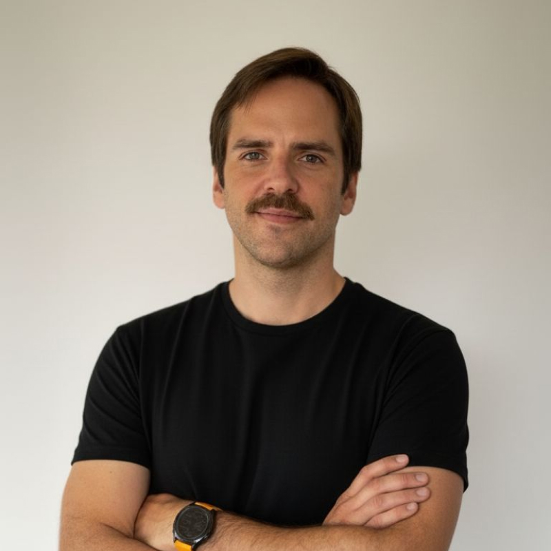

Gonzalo BrennerCEO y host de NTA
Lo que empezó como un podcast busca convertirse en un nuevo concepto de alto rendimiento: un espacio que conecta a líderes del ámbito laboral y deportivo, que comparten la búsqueda de equilibrio entre su vida profesional y personal, y que buscan una comunidad con su mismo estándar de disciplina y excelencia.
La propuesta es que Skechers no sea solo un partner, sino una marca fundadora de este ecosistema.
Ya hay 4 capítulos grabados, con Jaime Soler, Cecilia Valdés, Sebastián Keitel y Nicolás Goldstein. A continuación te dejamos un reel de estos primeros capítulos:
Le hablamos a una comunidad de personas que no viven del deporte pero que ordenan su vida en torno a él.
El deporte de alto rendimiento en Chile pasó de ser un nicho a una cultura: los eventos crecen, aparecen nuevas comunidades y cada vez más ejecutivos integran el deporte a su identidad. Seremos la voz de un grupo cada vez más grande.
Fuentes: Maratón de Santiago, Encuesta Runchile / Trichile, Universidad de Colonia (S&P 1500), Deloitte. Detalle completo disponible a pedido.
4 oportunidades para Skechers.
Queremos que Skechers sea parte de la conversación. No son casillas sueltas. Son 4 alternativas conectadas.
Branded content en el episodio
Presencia de marca dentro de las conversaciones del podcast, con mención explícita — “este episodio se los trae Skechers”.
Branded content en la comunidad
Presencia donde vive hoy la conversación — WhatsApp y el Strava Club — sin depender del episodio.
Un ejecutivo de Skechers como invitado
Si alguien del equipo entrena en serio y compite, tiene un lugar natural como invitado del programa.
Un capítulo grabado en tus oficinas
Grabamos un capítulo del podcast en tus oficinas o un lugar de tu elección, donde tus colaboradores tengan una experiencia privada con el invitado seleccionado.
“Enfócate en tu objetivo. Skechers se preocupa de tus pies.”
Propuesta de mensaje para campañaLas categorías no se lideran cuando ya existen. Se lideran cuando todavía se están formando.
El alto rendimiento dejó de ser una conversación exclusiva de los atletas. La intersección entre deporte y liderazgo sigue prácticamente vacía. Creemos que Skechers tiene la oportunidad de convertirse en la marca fundadora de este movimiento.
Explorar alianza estratégica